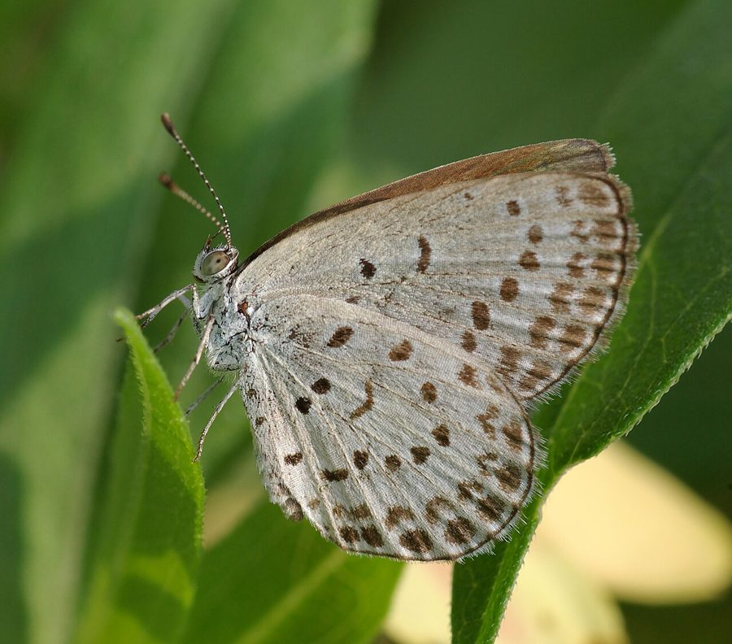

पेल ग्रास ब्लू तितलीPale Grass Blue
Pseudozizeeria maha · Lycaenidae · INS-0128

- Scientific name वैज्ञानिक नाम
- Pseudozizeeria maha (Kollar, 1844)
- Family कुल
- Lycaenidae
- Hindi हिंदी
- पेल ग्रास ब्लू तितली
- Local names स्थानीय नाम
- pale grass blue, blue
- Status here यहाँ की स्थिति
- native
- Movement आवागमन
- Resident, here all year
- Known from कहाँ दर्ज
- Others have published records from the wider Awadh–Purvanchal plain, none yet from Basti–Ayodhya अवध–पूर्वांचल से दूसरों के प्रकाशित अभिलेख, बस्ती–अयोध्या से अभी नहीं
- IUCN IUCN
- not evaluated
- Review समीक्षा
- audited and independently read
When to look कब देखें
Present all year. साल भर मौजूद।
Tell it apart from इनसे अलग पहचानें
पेल ग्रास ब्लू तितली / Pale Grass Blue
Pseudozizeeria maha (Kollar, 1844) — Lycaenidae
पेल ग्रास ब्लू तितली — यह एक बहुत ही छोटी तितली है जो Dark Grass Blue से थोड़ी बड़ी होती है। इसके नर के पंख हल्के नीले या बकरा-नीले (lavender blue) होते हैं, जबकि मादा के पंख भूरे या नीले-भूरे होते हैं। इसके पंखों के नीचे (ventral) हल्के रंग के होते हैं जिन पर छोटे काले धब्बे होते हैं। यह तितली घास के मैदानों, खेतों और बागों में पाई जाती है। इसकी इल्ली दलहन (pulses) और अन्य फलीदार पौधों पर पाई जाती है।
Quick Identification त्वरित पहचान
| Feature | Description |
|---|---|
| Wingspan | Small; 25–32 mm |
| Male dorsal | Pale lilac-blue or lavender-blue wings |
| Female dorsal | Greyish-brown or brownish-blue |
| Ventral surface | Pale cream or white with small black spots |
| Antennae | Black with white rings |
| Flight | Weak, fluttering flight; stays low |
Field tip: Look for small pale blue butterflies in grassland and fields. Males are paler blue than Dark Grass Blue; females are brownish. Often seen visiting low flowers.
हिंदी — कैसे पहचानें: बहुत छोटी तितली, नर हल्की नीली, मादा भूरी, घास पर।
Morphology आकारिकी
Biometrics:
| Measurement | Range |
|---|---|
| Adult wingspan | 25–32 mm |
| Body length | 11–14 mm |
| Forewing length | 11–15 mm |
| Caterpillar length (mature) | 13–17 mm |
Adult butterfly: Small. Males have pale lilac-blue or lavender-blue upper wings; females are greyish-brown or dusky. Ventral surface is pale cream or white with black dots and faint white rings around them.
Caterpillar: Green, very small, wrinkled, feeding on Leguminosae.
Behaviour & Ecology व्यवहार और पारिस्थितिकी
The Pale Grass Blue is a weak-flying butterfly that stays close to the ground in grasslands and cultivated areas. It flies only a short distance before landing, spending much time stationary on grass or flowers. Males perch on low vegetation, waiting for females. The species is associated with legume-rich habitats and is active year-round, with higher numbers in warm months.
Life Cycle / Phenology जीवन चक्र
| Stage / Season | Event |
|---|---|
| Egg | Laid on host plant leaves; microscopic; hatches in 3–4 days |
| Larva (caterpillar) | Green or brown, wrinkled; 3 instars; develops over 8–11 days |
| Pupa | Small chrysalis on host plant; emerges in 6–8 days |
| Adult | Year-round; multiple rapid generations; peak in warm months |
Host Plants or Prey आहार
Larval host plants (Leguminosae/Fabaceae):
Adult nectar sources:
- Small wildflowers and weeds in open areas
Predators / Natural Enemies शत्रु
- Spiders: Jumping spiders and web spiders
- Small birds: Capture flying adults
- Parasitoid wasps: Attack caterpillars
- Ants: Predate eggs and small caterpillars
Agricultural / Human Relevance कृषि प्रासंगिकता
Pollinator service. Visits small flowers and provides pollination services.
Legume crop association. Found in gram, cowpea, and other pulse crop areas.
Expected Locally स्थानीय रूप से अपेक्षित
Not a field record. Written from published accounts for eastern Uttar Pradesh. No confirmed local sighting yet — if you have seen it, that is what the atlas needs.
अभी तक स्थानीय पुष्टि नहीं। यह विवरण प्रकाशित स्रोतों से है, किसी अवलोकन से नहीं।
The species is expected year-round throughout Basti district in grasslands, pulse crop fields, and areas with wild legume vegetation. Peak activity in warm months. Look for very small pale blue butterflies in fields and grassland. A photograph with date and location would confirm a local record.
Distribution वितरण
Global range: South Asia, particularly India and surrounding regions.
In India: Distributed throughout the subcontinent.
In Uttar Pradesh: Common in grassland and agricultural areas throughout.
In Basti district / eastern UP: Expected in grassland and cultivated areas year-round.
Research Questions शोध प्रश्न
Anyone can investigate these | कोई भी इन प्रश्नों की जाँच कर सकता है
- What is the population size of Pale Grass Blues in different pulse crops (gram, lobia) in Basti? / बस्ती में विभिन्न दलहन फसलों में कितनी हल्की घास नीली तितलियाँ होती हैं? — Conduct population counts in different crops.
- How many generations of Pale Grass Blue occur during the rabi (winter) season in Basti? — Track emergence from October to March.
- What percentage of Pale Grass Blue eggs become parasitized caterpillars? — Collect and monitor eggs.
- Do Pale Grass Blues show host plant preference for gram versus cowpea? — Monitor egg-laying on different crops.
- How does Pale Grass Blue population density correlate with pesticide use in pulse fields? — Compare populations in organic vs. conventional fields.
Similar Species मिलती-जुलती प्रजातियाँ
| Species | How to tell apart | हिंदी | |
|---|---|---|---|
| [[dark_grass_blue\ | Dark Grass Blue]] (Zizeeria karsandra) | Darker blue males; larger number of spots on underside | काली घास नीली — गहरी नीली, अधिक दाग़े |
| [[lesser_grass_blue\ | Lesser Grass Blue]] (Zizina otis) | Larger; different spot arrangement; slightly larger wings | छोटी घास नीली — बड़ी, अलग दाग़े |
Field rule: A very small pale blue butterfly; males pale lilac-blue, females brownish; ventral pale with sparse spots; weak, low flight; in grassland and pulse fields.
Taxonomy & Classification वर्गीकरण
Original description. Described by Kollar in 1844 from Indian specimens. The genus Pseudozizeeria was erected for these small pale blue butterflies.
Subspecies. The nominate subspecies P. m. maha occurs throughout the Indian subcontinent.
Family and order placement. Order Lepidoptera, family Lycaenidae.
Phylogenetic notes. Pseudozizeeria is closely related to Zizeeria but distinguished by subtle wing markings and pale coloration in males.
IUCN status rationale. Not evaluated. Common and widespread with stable populations.
Photo Gallery फोटो गैलरी
No photos yet — add field photos to media/species/pale_grass_blue/ and run node scripts/sync_photos.js.
Photos needed आवश्यक फोटो
- [ ] Male on flower (नर — हल्की नीली)
- [ ] Female (मादा — भूरी)
- [ ] Caterpillar on host plant (इल्ली)
References संदर्भ
- Kollar, V. (1844). Lepidoptera in descriptions of the animals. Vienna.
- Bingham, C.T. (1907). The Fauna of British India, including Ceylon and Burma. Butterflies. Vol. 2. Taylor & Francis, London.
- Kehimkar, I. (2008). The Book of Indian Butterflies. Bombay Natural History Society, Mumbai.
- Kunte, K. (2000). Butterflies of Peninsular India. Universities Press, Hyderabad.
- Zoological Survey of India (2010). Fauna of Eastern Uttar Pradesh.
- GBIF Occurrence Data — Pseudozizeeria maha, India (2010–2025).
Source file: species/fauna/insects/pale_grass_blue.md